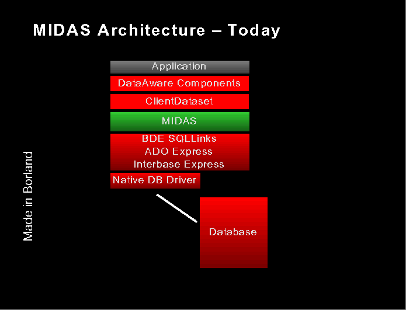

Data Access
ADOExpress Architecture (for Review)
MIDAS Architecture � Today (For Review)

DataCLX Architecture
DataCLX Architecture
Core DB classes.
TDataset, TField, TDataSource �
New TUniDataSet.
Uni-directional, read only dataset.
Use with provider and TClientDataSet for full featured database app.
DataCLX Architecture
TSQLDataSet
- TUniDataSet descendant
- Connects new DB drivers with CLX
- For executing SQL statements or calling SPs
- TSQLConnection
- TCustomConnection descendant
- Similar to TDatabase or TADOConnection�
- TSQLCLientDataset
- "Super" component for convenient visual browsing and editing of data through data-aware controls
DataCLX Architecutre
- Core Midas classes.
- Now in PRO SKU for Linux and windows VCL.
- TClientDataSet, TDataSetProvider �
- Connection components in Enterprise SKU.
- New SOAP-based connection component for Linux.
DataCLX Components
- TCustomConnection
- TSQLConnection
- TDataSet
- TCustomSQLDataSet
- TSQLDataSet
- TSQLQuery
- TSQLStoredProc
- TSQLTable
- TCustomClientDataSet
- TCustomLocalDataset
- TSQLClientDataSet
- (TADOClientDataSet)
- (TBDEClientDataSet)
- TSQLMonitor
TSQLConnection
- Descends from TCustomConnection
- Uses dbxdrivers to default connection properties
- Reads dbxconnections for connection names (Call GetConnectionRegistryFile from IniFiles.pas)
- Uses dbExpress SQLDriver and SQLConnection
- Used by TSQLMonitor
TCustomSQLDataSet
- Command / Statement component
- Cursor
- SQLConnection
TSQLDataSet
- Descends from TCustomSQLDataset
- Use it for:
- Queries (Select)
- Commands
- Insert
- Update
- Delete
- Alter
- Stored Procedures
TSQLDataSet
- Published Properties
- CommandType
- CommandText
- MaxBlobSize
- DataSource
- ParamCheck
- Params
- SortFieldNames
- Public Methods
TSQLQuery
- Descends from TCustomSQLDataset
- Compatibility component for TQuery
- Sets CommandType = ctQuery
- Public Property
- Published Properties
- DataSource
- MaxBlobSize
- ParamCheck
- Params
- SQL
TSQLQuery
- Public Methods
- ExecSQL (override)
- PrepareStatement (override)
TSQLStoredProc
- Descends from TCustomSQLDataset
- Compatibility component for TStoredProc
- CommandType = ctStoredProc
- Published Properties
- MaxBlobSize
- ParamCheck
- Params
- StoredProcName
- Public Methods
- ExecProc
- NextRecordSet
- PrepareStatement
TSQLTable
- Descends from TCustomSQLDataset
- Not recommended for SQL table access
- Compatibility component for TTable
- CommandType = ctTable
- Public Properties
- IndexFields
- IndexFieldCount
TSQLTable
- Published Properties
- Active
- IndexFieldNames
- IndexName
- MasterFields
- MasterSource
- MaxBlobSize
- TableName
- Public Methods
- DeleteRecords
- GetIndexNames
- PrepareStatement (override)
TSQLClientDataSet
- "Super" component
- For data editing and browsing
- Combines TSQLDataSet, TClientDataset and TDataSetProvider
- Reduces component dropping
TSQLMonitor
- Uses TSQLConnection to monitor SQL on the database server
- Multiple log files can be used
- TSQLTraceFlag = (traceUNKNOWN, traceQPREPARE, traceQEXECUTE, traceERROR, traceSTMT, traceCONNECT, traceTRANSACT, traceBLOB, traceMISC, traceVENDOR, traceDATAIN, traceDATAOUT);
TSQLMonitor
- Public Properties
- Published
- Active
- AutoSave
- FileName
- TraceList
- SQLConnection
- Events
- OnLogTrace
- OnTrace
TSQLMonitor
dbExpress - Database Architecture
- Thin, fast, native drivers for relational dbs
- Surface DBMS vendor features through common interface
- Simple interface - cursors
- uni-directional
- Read-only
- Data caching implemented in CLX layers above (TClientDataSet)
- Simple to replace and add drivers
- Simple configuration (ini files, CLX properties)
- Updates through Midas resolver
dbExpress - Database Architecture (Drivers)
- Metadata interfaces layered on basic interfaces
- Interfaces � similar to JDBC and ODBC
- SQLDriver
- SQLConnection
- SQLCommand
- SQLCursor
- SQLMetaData
- Written in C++ for immediate portability
- Runs on Solaris
- Runs on Windows
- Runs on Linux
dbExpress
- Provides a thin, fast data access layer that addresses the following issues we have with the BDE:
- Complexity
- BDE configuration
- Deployment
- Run time overhead
- Caching
- Metadata or schema cache
- Bdecfg
- Improved performance
- No internal query generation
- Minimal or no runtime metadata retrieval
dbExpress Enhancements
- Support for Multiple Transactions
- Linkable into applications
- Full Interbase 6 feature support
- SQL Dialects
- Rollback retaining
- New data types (Int64, Date, Time, TimeStamp)
- Multiple transactions
- Microsoft SQL Server 2000?
How it differs from BDE/SQLLinks:
- No concept of TTable at the driver level: Most database intensive
applications use queries or stored procedures to get to the data. Opening
table on the client not only consumes client resources but also locks up
server resources when there is no filtering on the underlying table.
Instead, use TSQLClientDataSet in dataCLX
- Unidirectional result set: Since ClientDataset provides a layer for
caching and scrolling on a result set, the data-access layer was designed
to return a forward only cursor.
- How it differs
- No caching of design time metadata: No schema cache as we did in BDE.
When you open a table or execute a query through BDE we have 3 copies of
the metadata in memory: one at the driver level, a copy in the core BDE
and a copy on the client. The design time metadata access interface sits
on top of the core data-access interface and is loosely coupled.
- No complex BDE configuration. Database specific properties will be
surfaced as set/get Properties. Either INI files or component properties
configure database access.
- How it differs
- Optimized data-access: No internal query generation. Execute queries when requested by the user.
- No concept of pseudoblobs ( CHAR or VARCHAR > 255 ). Treat them as scalar fields.
- Eliminate the use of PHYSICAL and LOGICAL field types. Clients see only the logical data types.
How it differs
- No BCD ENABLE/DISABLED setting, DECIMAL and NUMERIC data types will always be reported as fldBCD.
- Manage record buffer internally. Clients get individual field values only.
- Less error prone
How it differs
- No concept of live queries, cached updates. MIDAS provides all this.
- No Schema creation support or Batchmove
- Same interface for Query and Stored Procedure processing.
- Extensible C++ interface rather than a C API.
dbExpress base classes:
- SQLDriver
- SQLConnection
- SQLCommand
- SQLCursor
- SQLMetadata
Not in Kylix 1.0 DataCLX
- BDE
- SQL Explorer (later)
- Midas connection components based on IDispatch
- ADO (ever?)
- Data Dictionary
- Decision Cube
DEMO
- dbExplorer
- Same code on Linux and Windows